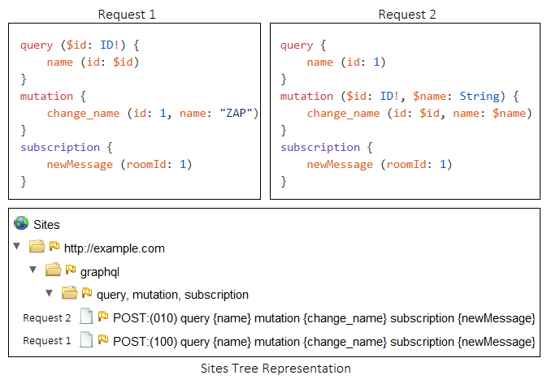

Правильное представление узлов для запроса GraphQL в дереве сайтов (начиная с ZAP 2.10.0).
Добавлена поддержка GraphQL для входных векторов активного сканирования.
В следующих разделах будет подробно рассказано о каждой из этих функций.
Древовидное представление сайтов
Каждый уникальный запрос GraphQL, переданный через ZAP, представлен в дереве сайтов.
Запросы размещаются под общим узлом, если они имеют одинаковые операции.
Два запроса с одинаковыми полями будут представлены одним и тем же узлом.
Единственное исключение — когда запрос отправляется со встроенными аргументами, а также с использованием переменных.
В этом случае добавляется префикс «0» или «1», чтобы различать их соответственно.
Например, на следующем рисунке показано, как два запроса могут быть представлены в дереве сайтов.

Входные векторы активного сканирования
Если входные векторы Active Scan Script включены,
значения вводятся для встроенных аргументов во всех запросах, передаваемых через ZAP.
Если в запросе используются переменные, переменные заменяются встроенными, а определения переменных удаляются.
Обратите внимание, что встроенный обработчик входного вектора JSON также работает, когда запрос отправляется в формате JSON.